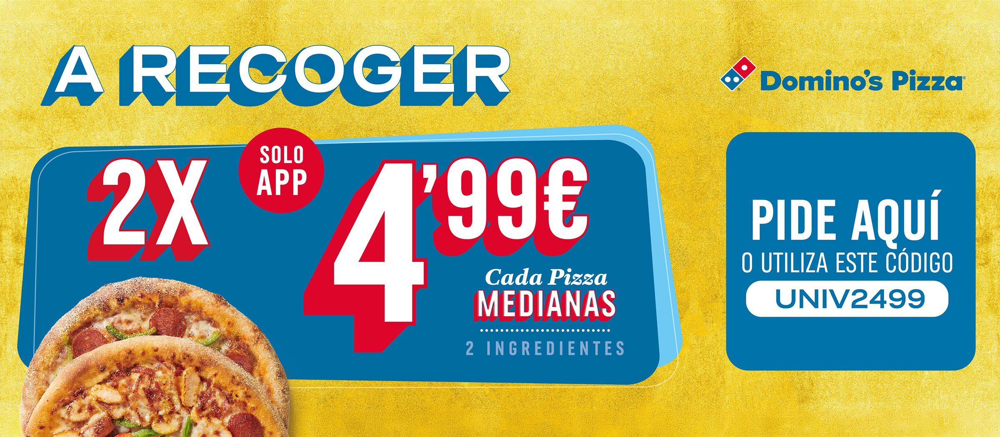
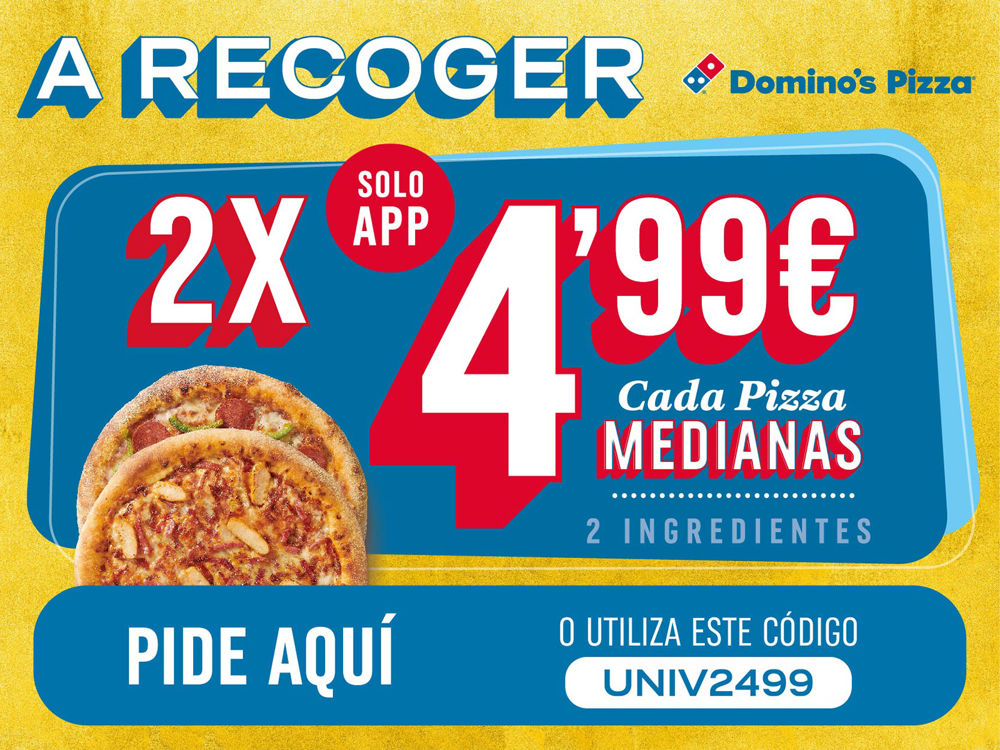
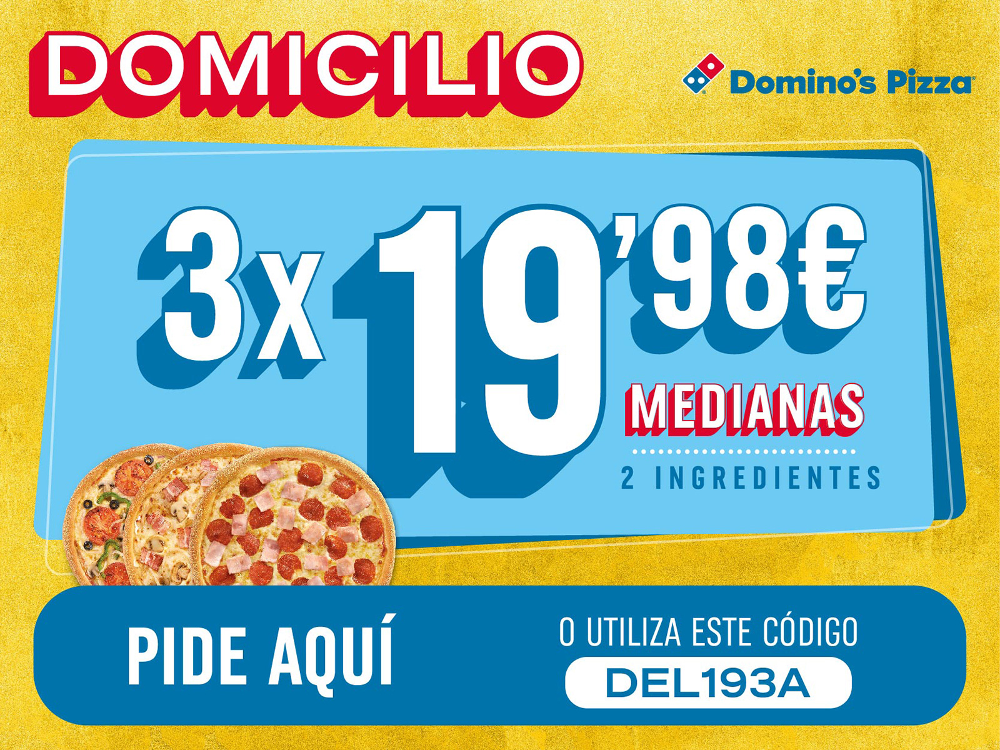
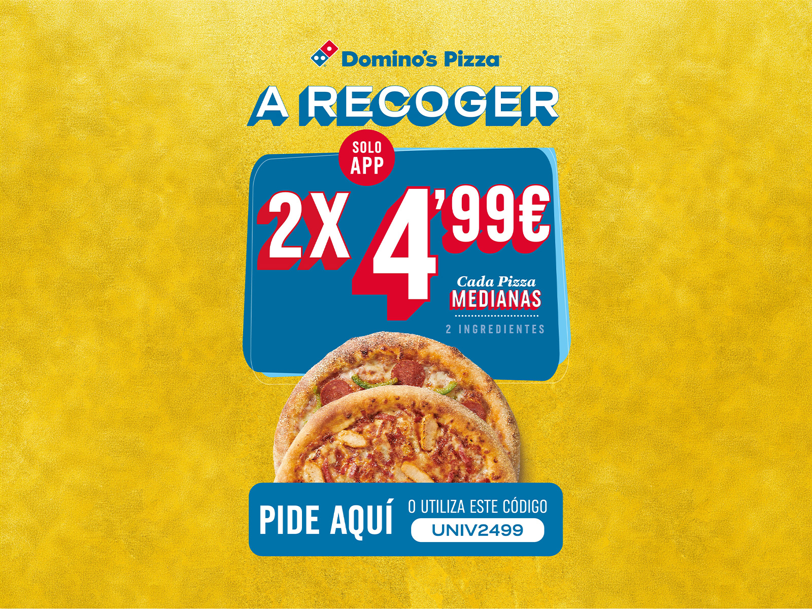
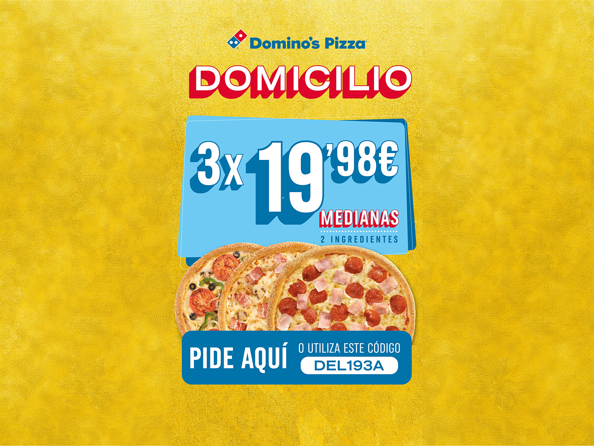
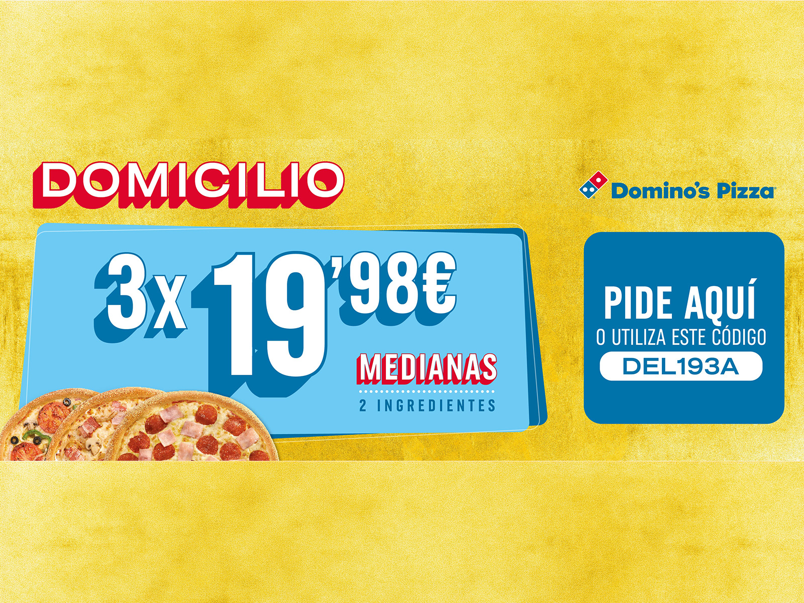
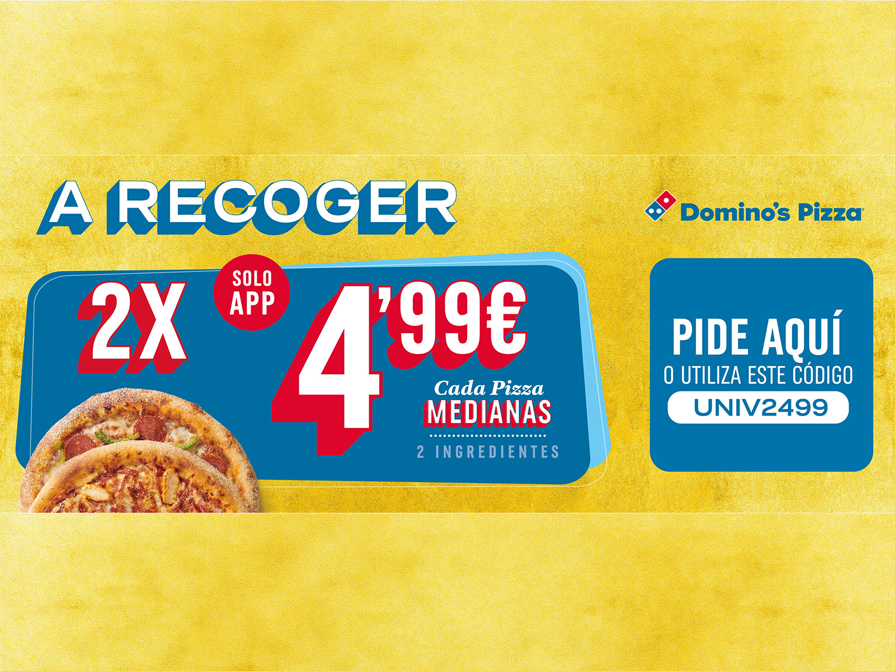

Proyectos / Domino's Pizza
Durante una etapa como freelance, diseñé una serie de banners publicitarios para una campaña web de Domino’s enfocada en estudiantes.

La idea era clara: captar la atención en cuestión de segundos y comunicar las ofertas de forma directa y atractiva. Para eso, desarrollé diferentes piezas —GIFs, vídeo y estáticos— que se colocaban en webs frecuentadas por universitarios, buscando incentivar pedidos online desde el primer vistazo.
Jugué con colores vibrantes, jerarquías visuales claras y una composición dinámica que sigue la identidad visual de Domino’s, pero con un punto más fresco y directo, pensado para este público concreto. Una campaña rápida, efectiva y muy visual.





